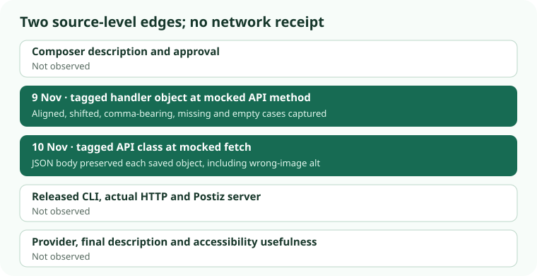

Social image descriptions · 10 Nov 2026 · tagged API-class test
Postiz 2.0.27 API class sent image descriptions unchanged to a mocked fetch
Five fictional draft objects captured from the 9 November handler test were passed to the exact tagged PostizAPI.createPost class. In each case, the body given to an in-memory fetch was JSON.stringify of that saved object. A description attached to the wrong image stayed wrong; missing and empty-input descriptions stayed absent. This was source-level VM execution, not an installed CLI, real HTTP request, server decision or final post.

What reached the mocked fetch
| Saved draft object | Image property in parsed fetch body | Result at this boundary |
|---|---|---|
| One image, aligned description | /fictional/tree.png: alt = “Green tree beside a path” | Preserved. |
| Two images; first description position omitted before the handler | /fictional/first.png: “Description intended for second image”; /fictional/second.png: no alt property | Wrong-image association passed unchanged, with no local rejection. |
| JSON-file object with comma in description | /fictional/sky.png: “Red kite, blue sky” | Comma preserved as part of one string. |
| Missing description | /fictional/bowl.png: no alt property | No local rejection. |
| Empty description input | /fictional/cup.png: no alt property in the saved handler object or fetch body | No local rejection. |
Each draft made exactly one in-memory fetch call to https://api.invalid/public/v1/posts with method POST, Content-Type: application/json and a fake authorization value. The five calls received synthetic 201 JSON responses. A 201 from this mock says nothing about real Postiz acceptance.
What the extra probes show
Adding an own alt: undefined property to a copy of the missing-alt object made JSON.stringify omit that property. This probes JavaScript serialization, not a sixth handler outcome. Changing the aligned description in memory to “Wrong image description” changed the fetch body and made the raw-body assertion fail. The saved tagged source and the five baseline objects were not changed.
A separate mock returned a synthetic 422 with the text “fictional rejected.” The tagged request wrapper raised Request failed: API Error (422): fictional rejected. That is evidence about local error formatting after a fake response. It does not show a real server rejecting missing or mismatched descriptions.
Source and method
The tagged src/api.ts constructor, request and createPost methods came from commit 425474eec62faec6bb50d3d0d97d8b04683b4d21. The saved file was checked at 6,553 bytes, SHA-256 77fc17e42c1de1762a13dd0fc7ba15782759c938b6bd0a6fd79eb92499962d69, with Git blob 39ba08f10dd2ff24282487241efc86cba3c67786. Node v24.20.0 stripped TypeScript types. A checked loader removed only the node-fetch import declaration and class export keyword, exposed the class in an isolated VM, and left the stripped request/createPost runtime region byte-identical. The VM supplied an in-memory fetch and inert FormData; it supplied no real transport or credentials.
The inputs were the five saved 9 November handler objects, not a rerun of the handler. Their fictional paths and expected handler-source hash were checked before this API-class test. The 7 November source audit explains the index mapping that can put a later description on an earlier image.
What still needs a separate receipt
- Released package: the published npm tarball and installed binary were not acquired or compared with this tag.
- Network and server: no actual HTTP bytes, Postiz app validation or persistent draft were observed.
- Provider and post: no channel response, Instagram image description, assistive-technology result or reach effect was observed.
The v2.0.27 release note claims Instagram alt_text for image posts and carousels; this test neither verifies nor refutes that claim. The next meaningful comparison would use an authorized, inert image and record the released artifact, actual request, server/provider response and final channel description separately.